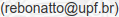

Mudamos de endereço! :D
Para melhor atender os maratonistas de programação da UPF, mudamos nosso endereço para maratonaupf.github.io! Em breve mudaremos o layout, também, para uma melhor leitura e maior facilidade de encontrar os recursos.
Temporada de Treinos 2017
O Clube de Programação já retomou suas atividades e está realizando treinos durante as férias, que continuarão durante o ano letivo de 2017, até a Maratona de Programação, em Setembro. Os treinos são realizados com problemas do portal UVa Online Judge, todos em inglês.
Quer participar? Inscreva-se na lista de e-mails do Clube!
É só enviar e-mail para:

Boa sorte a todos! \o/
Site será alterado em breve
Para melhor atender os estudantes de Tecnologia da Informação da UPF e demais interessados em programação, o website será reformulado em breve, dividido em duas seções: Maratona de Programação, e Monitoria.
Agradeço pela compreensão de todos. Mais novidades em breve!
Meia-Maratona de Programação realizada
A UPF realizou, no último sábado, dia 20 de agosto, no LCI, uma Meia-Maratona para selecionar os times que vão representar a Universidade na Maratona de Programação da SBC, cuja primeira fase irá ocorrer dia 10 de setembro, em Erechim. A prova teve 6 (seis) problemas, e duração de 3 horas.
As equipes Skynet dos Pampas, Schrödinger's Code (anteriormente Erlang) e Hadoop estão classificadas para ir a Erechim.
O placar final pode ser conferido no link a seguir:
Placar Final da Competição
{kind=link}
O caderno de problemas da Meia-Maratona, bem como as soluções dos problemas e dicas, estão disponíveis neste link.
Obrigado pela participação de todos, e boa sorte aos times que vão a Erechim representar a Universidade! \o/
MEIA-MARATONA É NESTE SÁBADO!
A UPF realizará, neste sábado, dia 20 de agosto, no LCI, uma Meia-Maratona para selecionar
os três times que vão representar a Universidade na Maratona de Programação da SBC, cuja primeira fase
irá ocorrer dia 10 de setembro, em Erechim.
Já registramos interesse de equipes de outras Instituições de Ensino para participar.
Elas não irão concorrer as vagas da Maratona da SBC, querem vir apenas pela
integração e desafio.
Programação:
08:00 - 08:15 - Abertura
08:15 - 08:45 - Aquecimento
09:00 - 12:00 - Meia-Maratona
Os competidores devem seguir as regras da Maratona de Programação da SBC.
Os times terão à sua disposição um computador e todo o material impresso ou escrito que desejarem levar.
Entretanto, não poderão fazer uso de material armazenado em meio digital ou ter acesso à Internet
durante a competição.
Maiores informações, entrar em contato com o Prof. Rebonatto .
Boa sorte a todos os participantes! :D
O que é a Maratona de Programação?
A Maratona de Programação é uma competição promovida pela Sociedade Brasileira de Computação, em parceria com a Fundação Carlos Chagas. O público-alvo são estudantes de graduação da área de computação (Ciência da Computação, Engenharia de Computação, Sistemas de Informação, etc) e áreas afins (Matemática, Física e Engenharia). Não há impedimentos à participação de alunos de outros cursos.
O objetivo da competição é resolver o máximo de problemas de programação no menor tempo possível, em times de três pessoas, com apenas um computador por time, durante cinco horas. A Maratona visa estimular as habilidades de trabalho em equipe e/ou sob pressão, pelo fator tempo.
Vale ressaltar que é permitido levar material de consulta impresso para a Maratona, como livros, cadernos e códígos-fonte impressos. Dispositivos eletrônicos como celulares, calculadoras, pen drives e computadores pessoais não são permitidos.
A UPF na Maratona
A UPF vem participando da Maratona de Programação desde 2007, e já teve uma equipe classificada para a Final Nacional em 2013. A Primeira Fase da Maratona este ano será na URI de Erechim, RS, dia 10 de Setembro (sábado).
Sites Oficiais
Onde Treinar
- URI Online Judge (em português)
- UVa Online Judge
- SPOJ Brasil
- Guia de Referência C/C++
- Grupo da Maratona no Facebook
Sobre o Clube de Programação
O Clube de Programação é uma iniciativa de alunos dos cursos da área de TI da Universidade de Passo Fundo. Nosso objetivo é reunir e treinar alunos para competições de programação como a Maratona de Programação da SBC e a Olimpíada Brasileira de Informática (OBI), e assim estimular a cultura de programação competitiva na região.
Se você tem interesse em participar de competições de programação como a Maratona e a OBI, ou está a fim de aprimorar suas habilidades de programação, participe! O formulário de inscrição está no link no topo da página.
Os treinos podem ocorrer semanalmente, na própria Universidade e por lista de e-mail, caso você não possa treinar presencialmente.
Mais informações em breve!